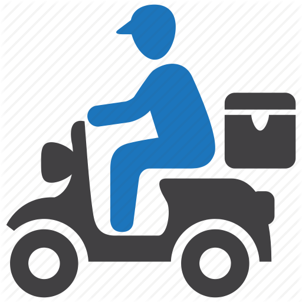

<ion-content class="blue-background" >
  
  <div id="container">
    <div>
      <div class="steps ion-padding">
       <h4> {{ steps[currentStep].title }} </h4>
       <h3> {{ steps[currentStep].subtitle }} </h3>
      </div>
      
      <div *ngIf="currentStep === 'first'">
        <div>
          <ion-button size="medium" class="dark-blue" (click)="changeStep('second')">
            <ion-icon slot="start" name="lock-open" ></ion-icon>
            Continue with phone
          </ion-button>
        </div>
      </div>
      <div *ngIf="currentStep === 'second'">   
        <ion-grid class="ionn-padding">
          <ion-row>             
            <ion-col size="2" >
                <ion-input value="Disabled" disabled value="+91" class="input-field"></ion-input>
            </ion-col>  
            <ion-col size="8" >
              <ion-input type="number" value="" class="new-background-color" [(ngModel)]="phoneNo" placeholder="Enter Phone" autofocus>
              </ion-input>
            </ion-col>
            <ion-col size="2" class="ion-no-padding" >
              <ion-button  size="medium"  class="dark-blue " (click)="changeStep('third')" >
                <ion-icon slot="start" name="paper-plane-sharp" ></ion-icon>
              </ion-button>
            </ion-col>
          </ion-row>
        </ion-grid>     
      </div>

      <div *ngIf="currentStep === 'fourth'" >
        <ion-grid>
          <ion-row>
            <ion-col size="9" >
              <ion-input  value=""  [(ngModel)]="otp" placeholder="Enter Otp" ></ion-input>
            </ion-col>
            <ion-col size="3" class="ion-no-padding" >
              <ion-button expand="full"  size="medium" class="dark-blue"  (click)="verifyOtp()" id="submitPhone">
                <ion-icon slot="start" name="paper-plane-sharp"></ion-icon>
              </ion-button>
            </ion-col>
          </ion-row>
        </ion-grid>
      </div>
      

      <div id="recaptcha-container" class="ion-padding" [ngClass]="reCapcthaClass"></div>
      <ion-progress-bar type="indeterminate" *ngIf="progressBarOn"></ion-progress-bar>
    </div>
  </div>
</ion-content>
